Lab & outils
Introduction
Dans un environnement professionnel, la gestion centralisée des utilisateurs, des ordinateurs et des ressources réseau est essentielle pour garantir sécurité, productivité et cohérence. C'est là qu'intervient Active Directory (AD), le cœur de l'infrastructure d'un réseau Windows. Dans ce tutoriel, nous allons voir pas à pas comment installer et configurer Active Directory Domain Services (AD DS) sur Windows Server 2025, la dernière version du système serveur de Microsoft.
Objectif : mettre en place un domaine interne de type mondomaine.local, prêt à accueillir des utilisateurs, des machines clientes et des stratégies de sécurité.
Étape 1 : Renommer le serveur et définir une IP statique
Apres l'installation par défaut, Windows Server attribue un nom aléatoire comme WIN-FGCNCJ0TMG9, ce qui n'est pas pratique en production.
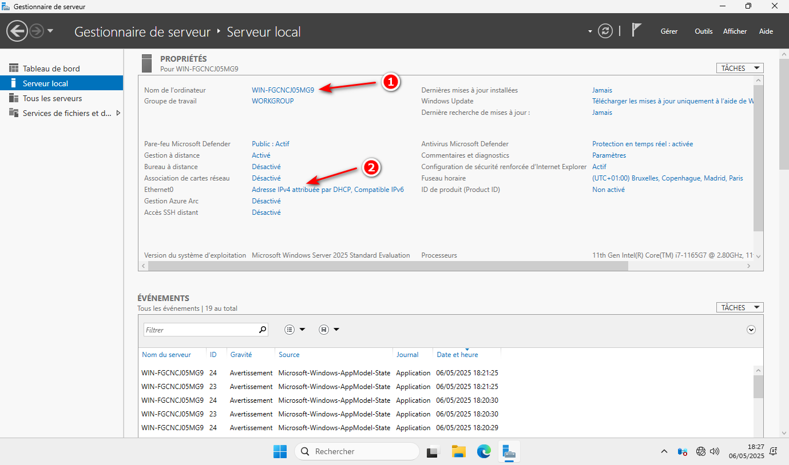
Nous allons renomer le serveur en faisant un clique droit sur le menu Démarrer > Système. Dans la section Nom de l'appareil, clique sur Renommer ce PC ou simplement depuis le gestionnaire de serveur(s'il ne s'ouvre pas automatiquement, clique sur l'icône depuis la barre des tâches). clic sur le nom de l'ordinateur(voir image en 1) et definir un nom clair tel que SER25-ADDS-GPO puis nous rédemmarons ulterieurement(après la configuration IP)
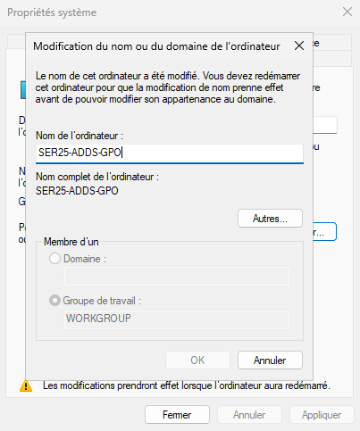
Ensuite nous allons definir l'ip du serveur en statique en Ouvrant le Panneau de configuration > Réseau et Internet > Centre Réseau et partage puis Clique sur Modifier les paramètres de la carte à gauche ou simplement en cliquant sur la carte dans le gestionnaire de serveur(voir image en 2)
- Clic droit sur ta carte réseau (Ethernet0 dans notre cas) > Propriétés.
- Coche Utiliser l'adresse IP suivante et configure en fonction de tes paramètres réseaux:
- Adresse IP : 192.168.10.150
- Masque de sous-réseau : 255.255.255.0
- Passerelle par défaut : 192.168.10.1
- DNS préféré : 192.168.10.150 (le serveur lui-même)
- DNS auxiliaire : 8.8.8.8 (Google DNS, optionnel)
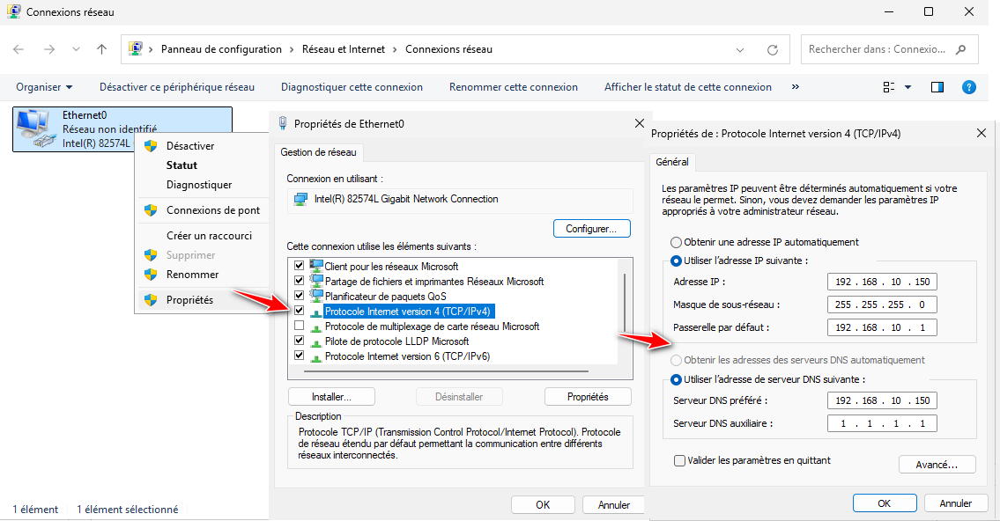
Fig. 03Configuration IP statique - Nous pouvons rédemmarer maintenant
Nous constatons que la configuration a été appliqué
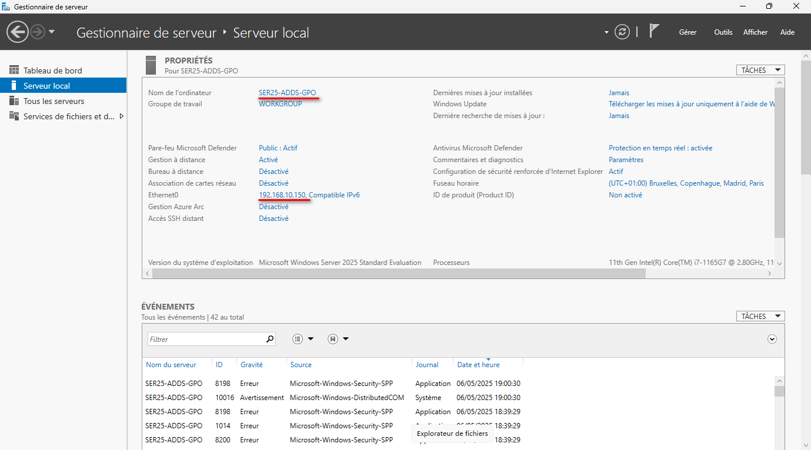
Étape 2 : Installer AD DS et promouvoir le serveur en contrôleur de domaine (avec DNS)
2.1 Installation du rôle AD DS
Une fois le serveur renommé et l'adresse IP configurée, il est temps d'installer le rôle Active Directory Domain Services (AD DS) et de promouvoir ce serveur en contrôleur de domaine. Cette opération va aussi installer un serveur DNS, indispensable pour le bon fonctionnement du domaine.
Depuis le gestionnaire de serveur
- Dans le tableau de bord, clique sur "Ajouter des rôles et fonctionnalités"
- Type d'installation : coche Installation basée sur un rôle ou une fonctionnalité > Suivant.
- Serveur de destination : laisse le serveur local sélectionné > Suivant.
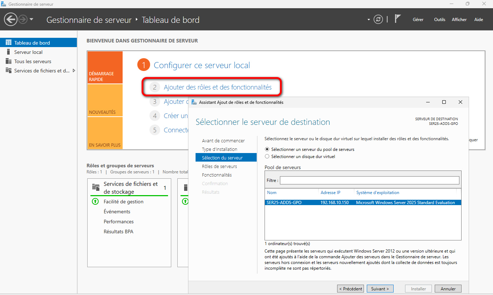
Fig. 05Serveur de destination - Dans la liste des rôles, coche Services de domaine Active Directory (AD DS).
- Une fenêtre pop-up s'ouvre → Clique sur Ajouter les fonctionnalités.
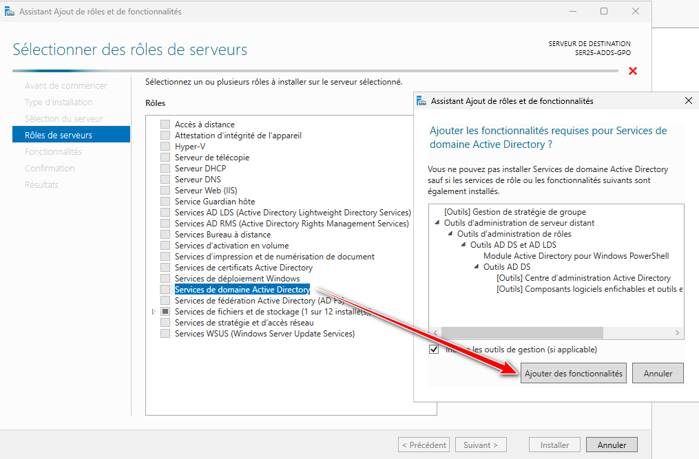
Fig. 06Ajout du service ADDS - Clique sur Suivant jusqu'à la page de confirmation.
- Clique sur Installer.
🔄 L'installation peut prendre quelques minutes. Ne redémarrez pas encore à cette étape.
2.2 Promotion du serveur en contrôleur de domaine
Une fois AD DS installé, il faut promouvoir le serveur pour qu'il devienne un contrôleur de domaine et crée une nouvelle forêt Active Directory.
Dans le Gestionnaire de serveur, une notification apparaît (drapeau jaune) → Clique dessus puis sur "Promouvoir ce serveur en contrôleur de domaine".
- Déploiement : coche Ajouter une nouvelle forêt.
- Nom du domaine racine : entre un nom (komjordan.local dans notre cas) :
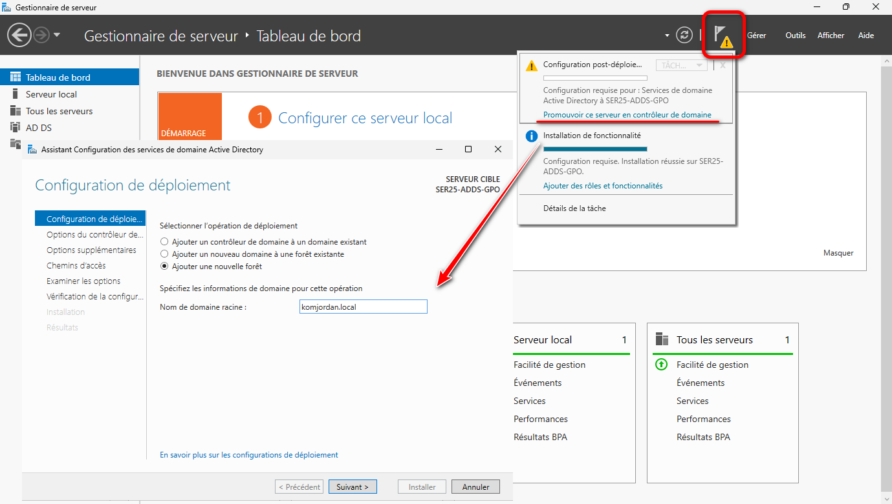
Fig. 07Promotion de l'ADDS - Cochez Serveur DNS ( Domain Name System) si ce n'est pas déjà fait
- Mot de passe DSRM (Directory Services Restore Mode) : Definissez un mot de passe robuste > suivant
- Ignorez l'avertissement DNS s'il apparaît (car on installe un nouveau DNS).
- Laissez les noms NetBIOS proposés par défaut ou adaptez si nécessaire > suivant
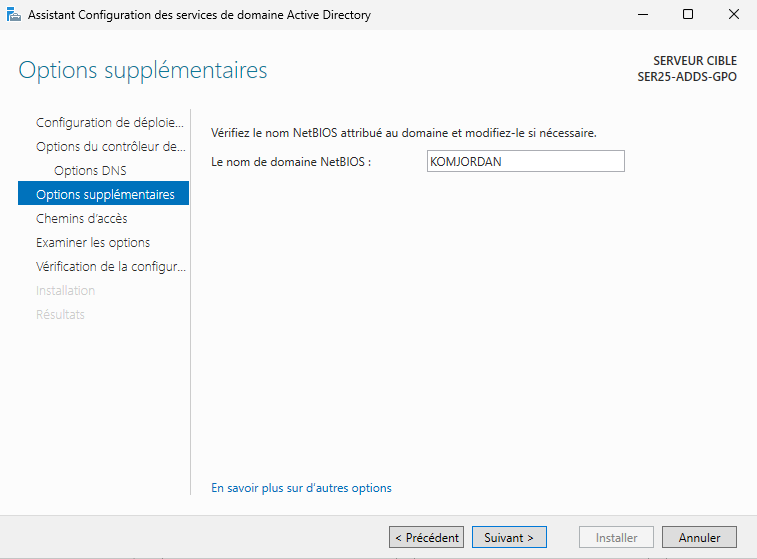
Fig. 08Nom NetBIOS - Laissez les chemins d'installation par défaut (NTDS, SYSVOL, logs).
- Vérifiez le résumé de configuration (affichez le script si besoin il peut être utiliser pour installer ADDS via
PowerShellavec quelques modifications)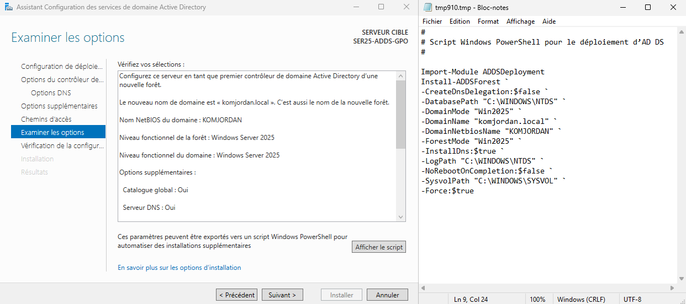
Fig. 09Script PowerShell ADDS - Suivant puis installer
À la fin, le serveur va redémarrer automatiquement pour finaliser la promotion.
Pour vérifier l'installation toujours dans le gestionnaire de serveur dans Outils > Utilisateurs et ordinateurs Active Directory
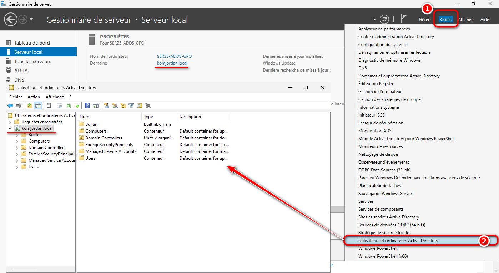
Profitons pour créer des Unités d'Organisations (OU) et des utilisateurs
- Creation des OUs
- Dans le panneau de gauche, clic droit sur le nom du domaine
komjordan.local - Sélectionner "Nouveau" > "Unité d'organisation"
- Donner un nom à l'OU, (Paris dans notre cas)
- (Optionnel) Cocher "Protéger le conteneur contre une suppression accidentelle" > Ok
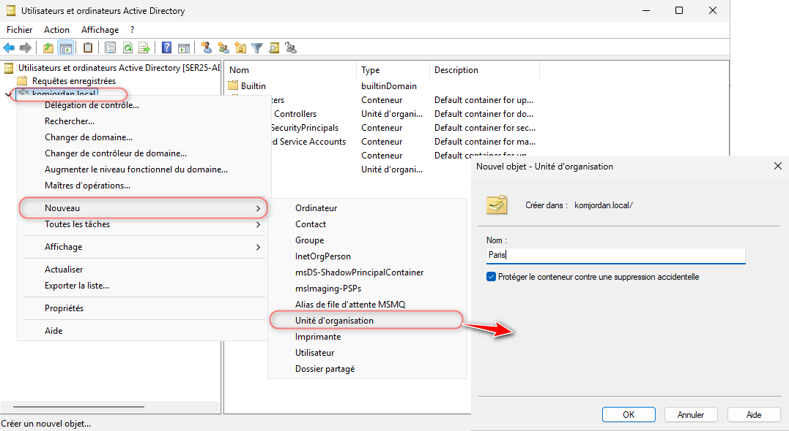
Fig. 11Création d'une OU - Répéter pour d'autres OU comme
RH, ITcette fois en faisant un clique droit depuis l'OU précédemment créé carPariscontientRH et IT
- Créer un utilisateur dans une OU
- Déployer l'OU souhaitée (IT dans notre cas).
- Clic droit > "Nouveau" > "Utilisateur"
- Renseigner les informations sur l'utilisateurs
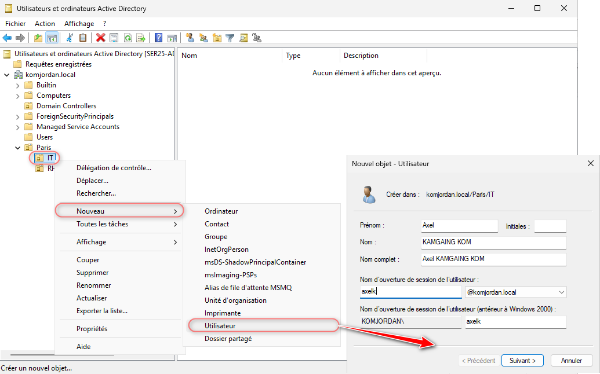
Fig. 12Création d'un utilisateur - Suivant, entrer un mot de passe (cocher "l'utilisateur doit changer son mot de passe à la prochaine ouverture de session").
NB: il est également possible d'automatiser la creation des utilisateurs en masse en utilisant des scripts PowerShell ou des outils comme CSVDE
Ajout d'un ordinateur dans le domaine
L'ajout d'un ordinateur à un domaine Active Directory permet de l'intégrer à l'environnement réseau de l'entreprise. Cela permet une gestion centralisée des utilisateurs, des politiques de sécurité (GPO), des ressources partagées (imprimantes, fichiers), et une authentification unifiée.
- Dans l'explorateur de fichiers clic droit sur Ce PC → Propriétés.
- Clic sur Renommer ce PC (avancé) → Modifier
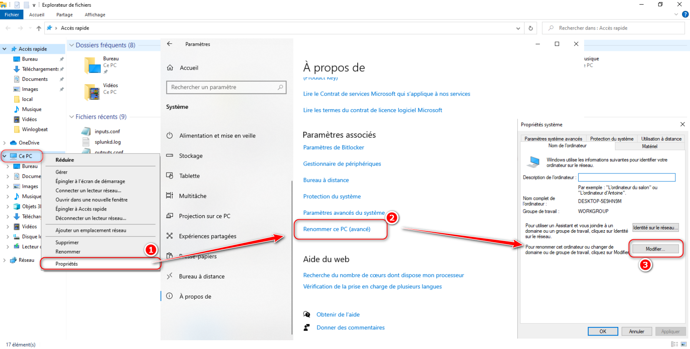
Fig. 13Ajout ordinateur dans le domaine - Sélectionnez Domaine, entrez le nom de domaine (
komjordan.localdans notre cas) puis OK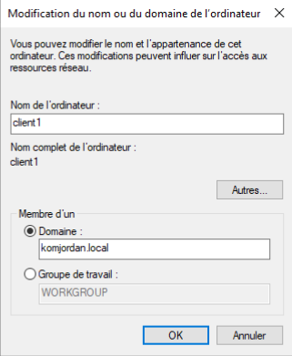
Fig. 14Ajout ordinateur dans le domaine - Dans la fenêtre suivante entrez les identifiants du domaine
- Bingo nous avons rejoint le domaine
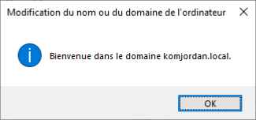
Fig. 15Ajout ordinateur dans le domaine - Après avoir redémarré l'ordinateur nous pouvons nous connecter avec un utilisateur précédemment crée
Étape 3 : Gestion des GPO (Stratégies de groupe)
Introduction
Une GPO (Group Policy Object) est un ensemble de règles de configuration appliquées automatiquement à des ordinateurs et/ou des utilisateurs dans un domaine Active Directory. Les GPO permettent de centraliser la gestion de la sécurité, des restrictions, des paramètres système, des scripts, des logiciels, etc.
Par défaut, une fois que ton domaine est créé (komjordan.local), deux GPO sont présentes automatiquement :
- Default Domain Policy : S'applique à tous les objets du domaine
- Default Domain Controllers Policy : S'applique uniquement à l'OU Domain Controllers
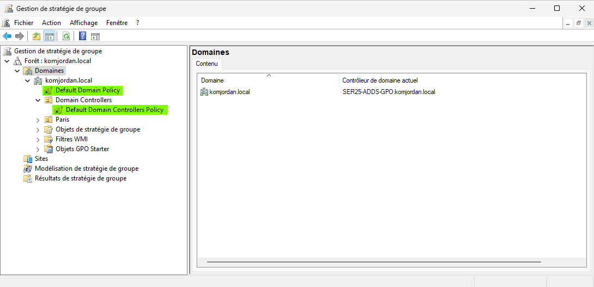
Fig. 16GPO par défaut
Création de quelques GPO utiles
A- Appliquer une GPO à un ordinateur — (cas moins pratique)
Appliquer une GPO uniquement à un poste est peu recommandé sauf exception. Il est préférable d'utiliser des OU (unités d'organisation) dédiées, ou un groupe de sécurité.
- Désactiver l'accès au Panneau de configuration pour l'ordinateur CLIENT 2
- RH
- Dans le panneau de gauche, clic droit sur l'OU RH
- Créer une GPO dans ce domaine, et lier ici...> nommez-la
Default wallpaperpuis OK - Clic droit sur la GPO puis modifier
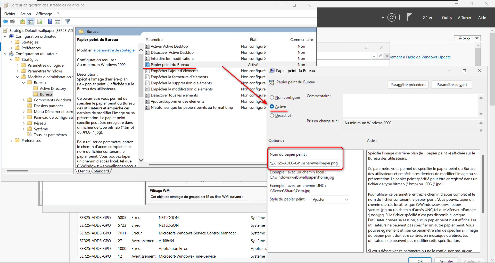
Fig. 17GPO fond d'écran par défaut - Naviguez dans : Configuration utilisateur > Stratégies > Modèles d'administration > Bureau > Bureau
- Double-cliquez sur Fond d'écran du bureau → Activer la stratégie.
- Dans le champ Nom du fond d'écran, entrez le chemin réseau d'accès au fond d'écran. Dans notre cas
\\SER25-ADDS-GPO\Partage\wallpaper.jpg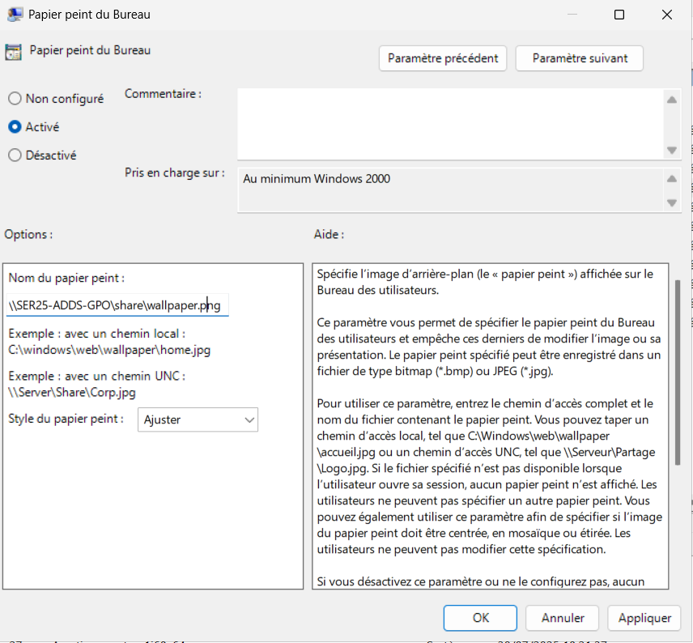
Fig. 18GPO fond d'écran par défaut - Nous constatons qu'il à été appliqué
Fig. 19fond d'écran par défaut
B- Appliquer une GPO à un Groupe
- Désactiver l'invite de commande pour le groupe RH
- Dans le panneau de gauche, clic droit sur le groupe
- Créer une GPO dans ce domaine, et lier ici... → nommez-la
Désactiver l'accès à l'invite de commandepuis OK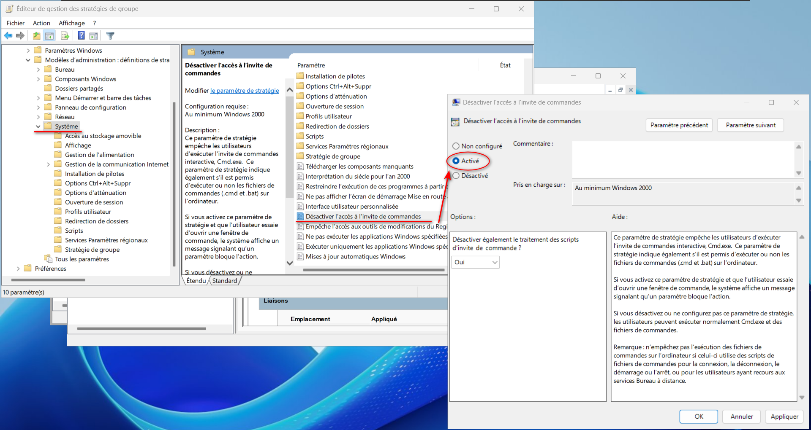
Fig. 20Invite de commande désactivé - Clic droit sur la GPO puis modifier
- Naviguez dans Configuration utilisateur > Stratégies > Modèles d'administration > Système. Activez Empêcher l'accès à l'invite de commande On se connecte avec un compte du groupe RH et vérifie que l'invite de commande est inaccessible
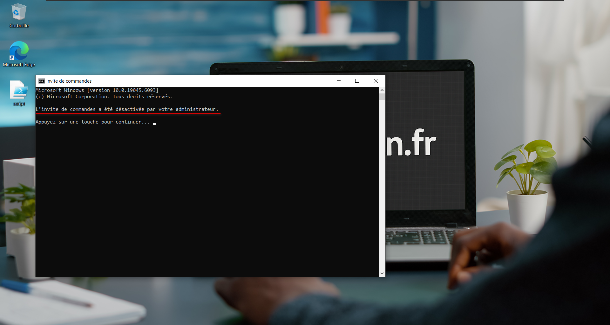
Fig. 21Invite de commande désactivé
Gérer les priorités des GPO
Dans Gestion des stratégies de groupe, l'ordre des GPO dans une OU détermine leur priorité (les GPO en haut de la liste ont une priorité plus faible)
Pour modifier l'ordre, utilisez les flèches Monter ou Descendre.
Mentionnez l'option Imposé (clic droit sur la GPO) pour forcer l'application d'une GPO, même si une autre GPO de priorité inférieure tente de la surcharger.
Suite en cours de redaction
Étape 4 : Surveillance et Maintenance d'Active Directory
Pour maintenir un environnement Active Directory (AD) stable et sécurisé, nous surveillons régulièrement la santé du domaine, analysons les journaux d'événements et configurons des sauvegardes fiables.
Vérification de la santé du domaine
Nous utilisons l'outil dcdiag pour diagnostiquer les problèmes sur le contrôleur de domaine.
- Ouvre une
invite de commandeen tant qu'administrateur - Tape la commande :
dcdiag /v > diagnostic.txt - Cette commande exporte un rapport détaillé dans un fichier
diagnostic.txt. - Ouvre le fichier
diagnostic.txtavec un éditeur de texte pour vérifier les résultats et repérer les erreurs (par exemple, réplication ou DNS).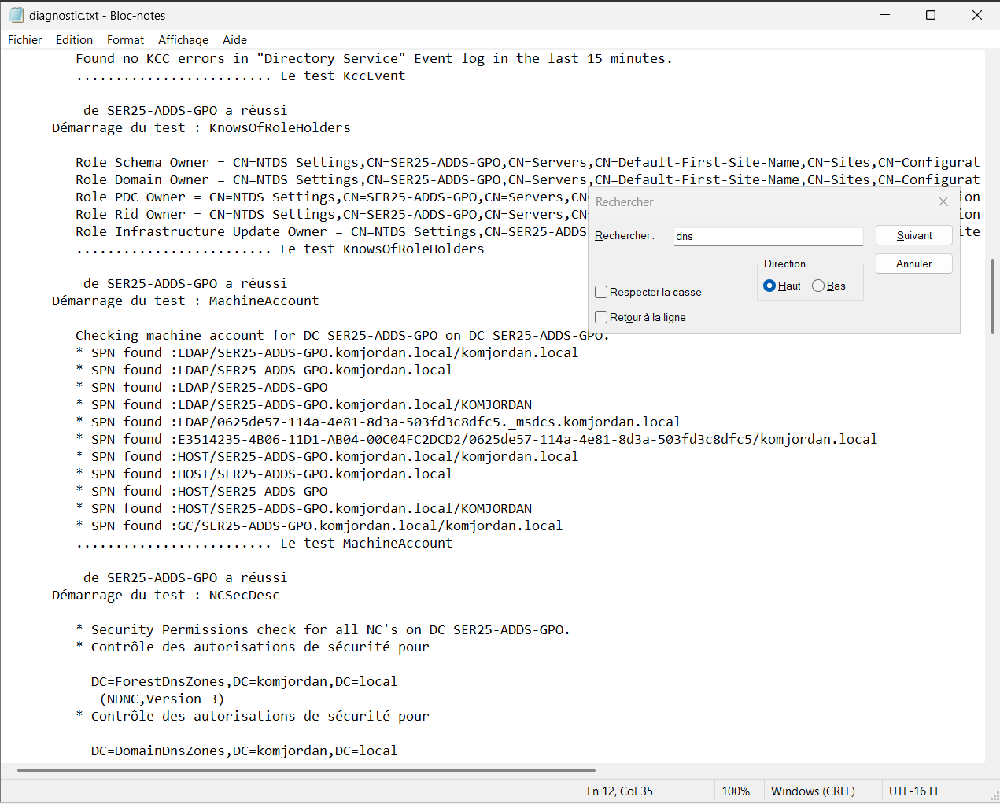
Fig. 22Rapport dcdiag
Nous analysons ce rapport pour corriger toute anomalie détectée.
Surveillance des journaux d'événements
Nous surveillons les journaux pour identifier les erreurs liées à Active Directory ou DNS.
- Ouvre le
Gestionnaire de serveurdepuis la barre des tâches. - Consultons dans Outils → Observateur d'événements → Journaux Windows → Système, pour les événements généraux du serveur
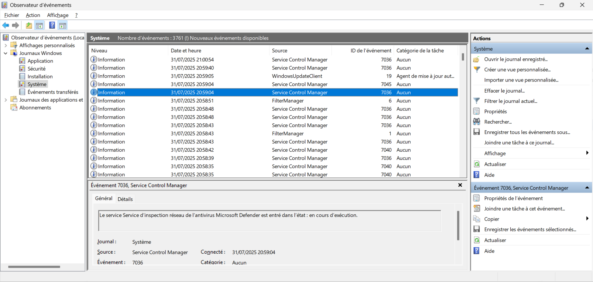
Fig. 23Observateur d'événements - Ensuite, vérifie
Journaux d'applications et services, pour les erreurs spécifiques à AD.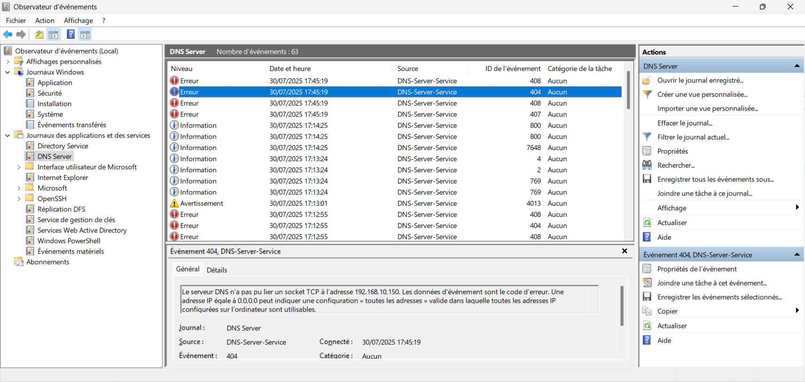
Fig. 24Journaux des services d'annuaire - Si des erreurs apparaissent, nous les analysons pour appliquer les correctifs nécessaires.
Sauvegarde d'Active Directory
Nous configurons des sauvegardes régulières avec Windows Server Backup pour protéger Active Directory.
Installation du rôle Windows Server Backup
- Ouvrir le Gestionnaire de serveur.
- Clique sur gérer → Ajouter des rôles et des fonctionnalités.
- Dans fonctionnalités cochons
Sauvegarde Windows Server, puis surInstaller.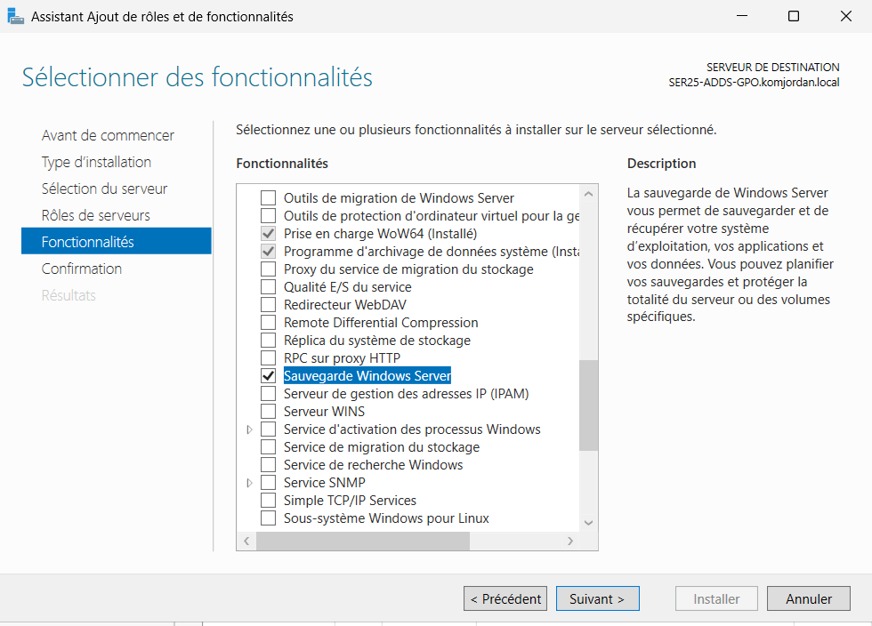
Fig. 25Installation de la sauvegarde - Une fois installé, dans outils ouvrons
Sauvegarde Windows Serverou menu Démarrer → Exécuter →wbadmin.msc.
Configuration des sauvegardes régulières
- Dans
wbadmin.msc, cliquons surPlanification de sauvegarde. - Suivons l'Assistant Planification de sauvegarde, nous pouvons faire une sauvegarde complète ou personalisée et cocher
État du systèmela base de données Active Directory, les fichiers SYSVOL et le registre.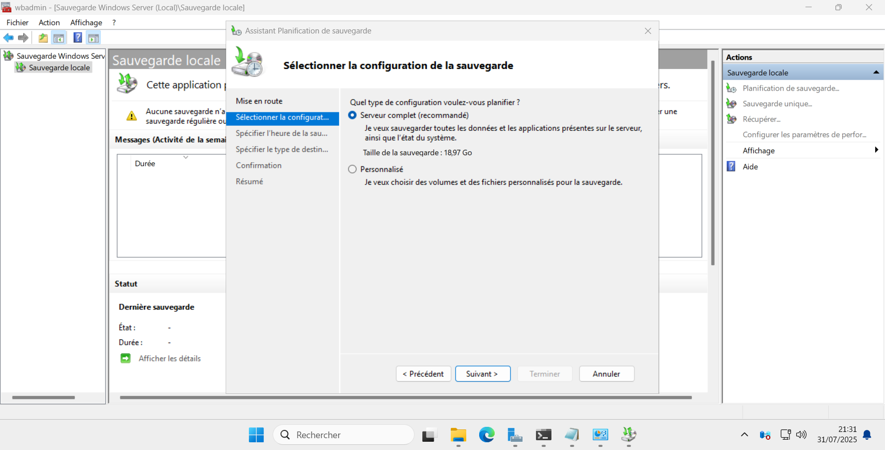
Fig. 26Sauvegarde complète - Planifie une sauvegarde quotidienne (par exemple, à 2h00 du matin).
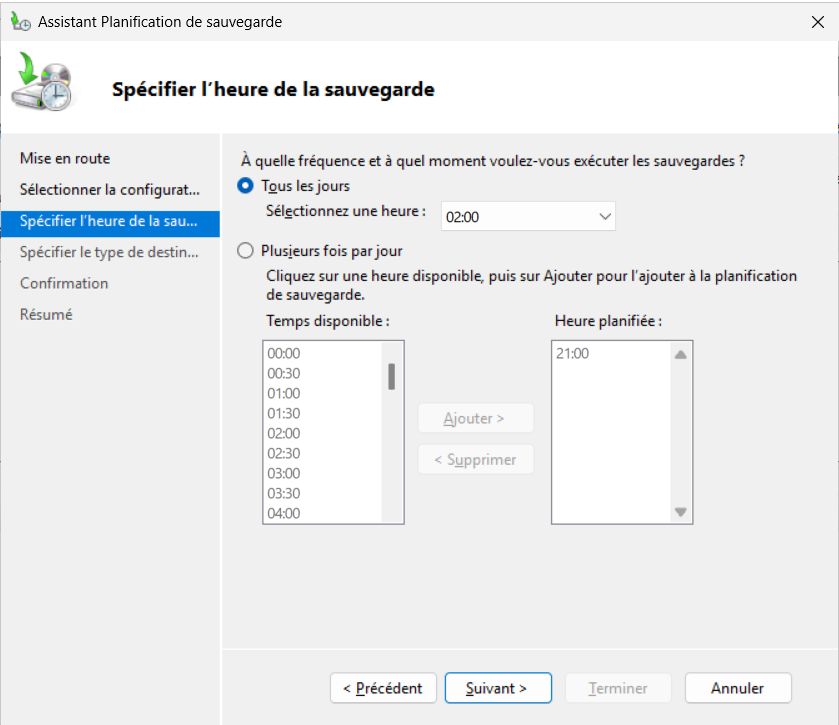
Fig. 27Planification de la sauvegarde - Choisis une destination : un disque dédié ou un partage réseau (par exemple,
\\NAS\Backups\AD).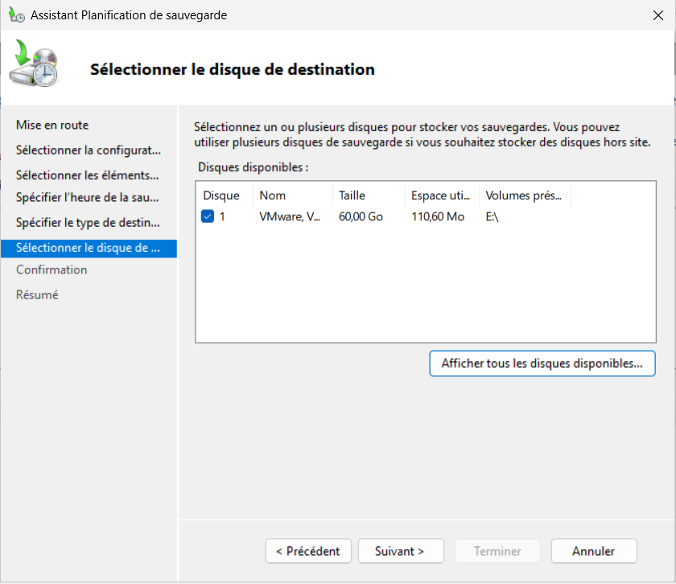
Fig. 28Choix de la destination - Une fois la planification terminée, une sauvegarde initiale peut être lancée manuellement en cliquant sur
Sauvegarde unique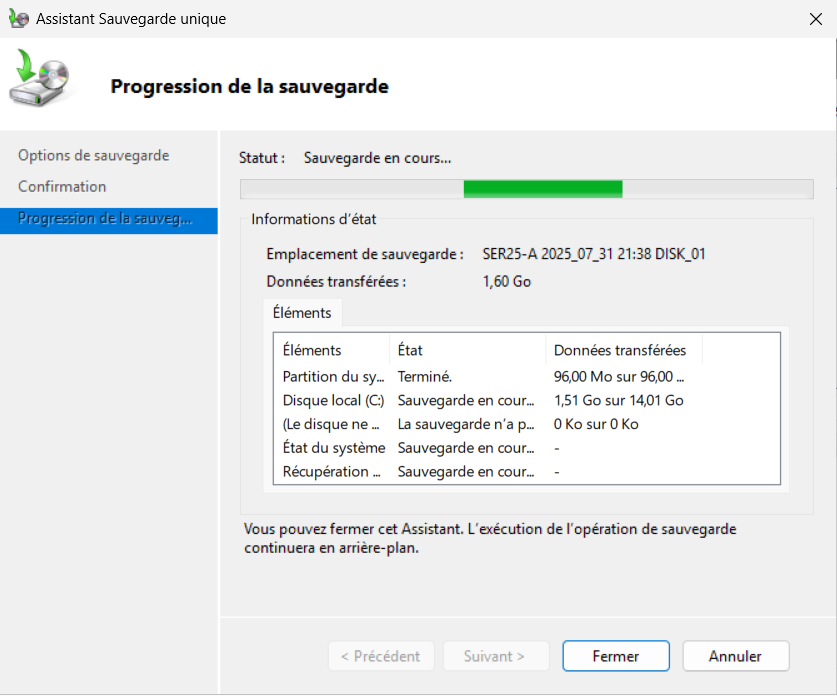
Fig. 29Sauvegarde Unique
Nous vérifions que la sauvegarde est planifiée en consultant la section statut dans wbadmin.msc. Après la première exécution, les détails de la dernière sauvegarde apparaîtront.
Nous constatons que la sauvegarde est désormais configurée et prête à protéger notre domaine.
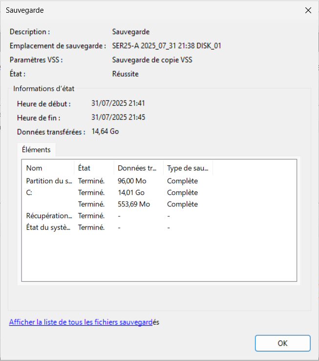
Conclusion
Dans ce tutoriel, nous avons vu comment déployer Active Directory Domain Services sur Windows Server 2025, créer un domaine fonctionnel avec des unités organisationnelles structurées, et mettre en place les bases de la gestion des stratégies de groupe. Cette infrastructure constitue le fondement d'un environnement d'entreprise sécurisé et administrable centralement.
Crédits
None